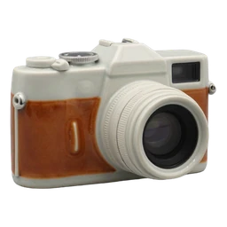
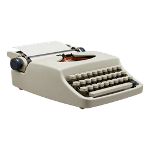
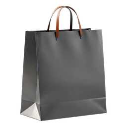

API Key Required
Enter the API key from your server's .env file to connect all tools.
Checking ComfyUI…
Generation
Curation
Publishing

Instagram Schedule and manage posts
Articles Draft and publish to WordPress
Shop Prep Singulart listings